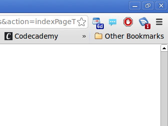
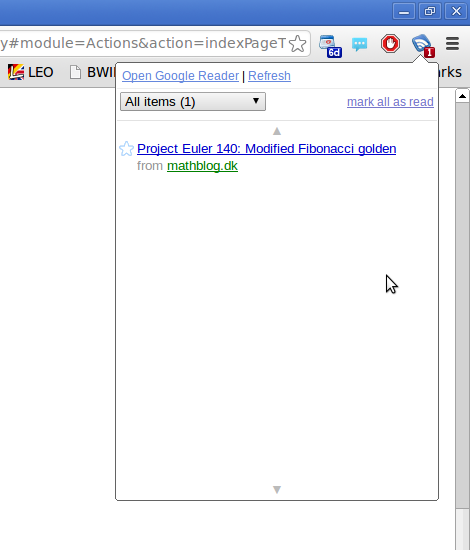
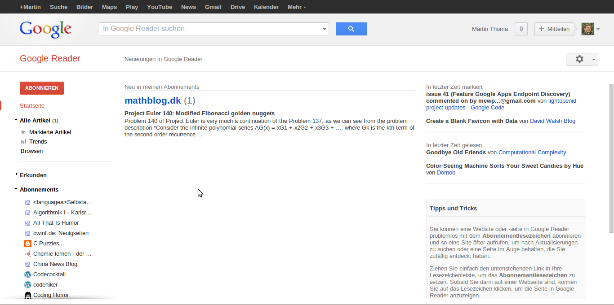
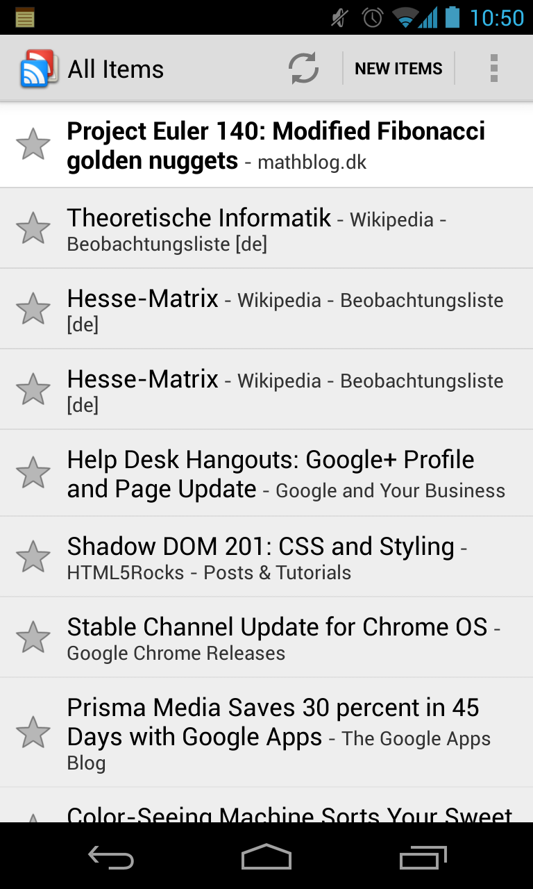
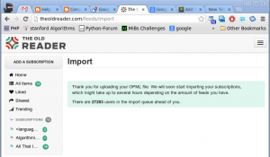
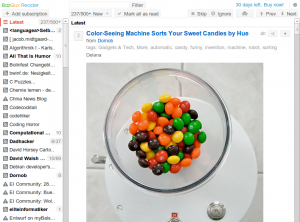
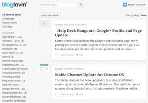
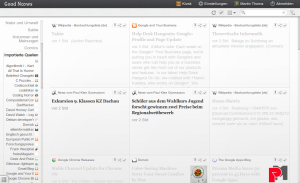
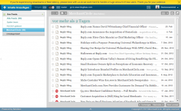
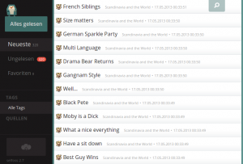

On July 1, 2013, Google will retire Google Reader (source). A first step should be to save your data (especially your subscriptions). You can do that with Google Takeout. You could also sign a petition against closing Google Reader, but I doubt that this will have any effect. Currently, 106,712 people support this petition, though.
How I used Google Reader
Most important for me was the Chrome plugin:
{kind=link}

{kind=link}

The website offered a nice, clean way to administrate my 109 Feeds. Last (and least) the Android App. I don't have my smartphone long enough to really use this app, but it is one of 10 Apps I've currently installed.
{kind=link}

{kind=link}

Now, I am interested in alternatives. They should
- allow me to import my subscriptions,
- have a Google Chrome Extension (in Chrome Web Store)
- have an Android App (in Android Market)
- have export options
- sync my feeds, as I would like to read my feeds on several computers and my smartphone
- allow me to login via Google OpenID
Web Services
The Old Reader
The Old Reader is a web service that wants to provide the same service as Google did before.
{kind=link}

Looks pretty good, doesn't it? But it currently displays the message "There are 27283 users in the import queue ahead of you."
BazQux Reader
BazQux Reader seemed to be a real alternative. It allowed me to sign in with Google, import my subscriptions and it looked familiar:
{kind=link}

Another point for BazQux: It supports OPML-Export (Click on the icon at the top right corner → Subscriptions → Export OPML)
But now the drawbacks:
- 9 $/year
- no Chrome plugin
- no Android App
Bloglovin'
Bloglovin' is another WebService that looks very nice and is free, and seems to be a real alternative. While importing my subscriptions, I got a 504 Gateway Time-out, but it imported my feeds anyway.
{kind=link}

The service seems to be free, they have an Android App and an iPhone App, but no Google Chrome App and I can't sign in with Google.
Bloglovin' does not provide an export function.
Good Noows
It seems to get better. Good Noows lets me sign in with Google, offers an import function and has a Chrome App. It seems to be free.
{kind=link}

However, it has no Android App and seems not to support export.
Bloglines
Bloglines offers an export function! I can't login with Google, but I can import my 109 Feeds.
It looks like this:
{kind=link}

It has no Chrome App and the Android App is possibly not official.
Host yourself
Selfoss
Selfoss gives you the possibility to host your RSS-Aggregator by yourself. It looks quite good, requires only PHP 5.3 and MySQL and mobiles are supported.
{kind=link}

Tiny Tiny RSS
TT-RSS allows you to host a service similar to Google Reader. This could be an interesting alternative, but currently the demo page is disabled. I'm waiting for reviews of this one.
- Tiny Tiny RSS: GitHub, Issue Tracker, Download, Demo
- Android Client: Market
Tried, but no alternative
- Pulse: Where can I add RSS-Feeds in this service?
- FeedAFever: Why should I pay for this, when there are free services?
- Feedly: What is this? Is it a Web service? Is it a standalone software? Do I have to host it myself?
- Hivemined: Not ready yet
- NewsBlur: I could not sign in.
- Rolio.com: No import
More alternatives
Here is an article that lists lots of alternatives.
A short survey
I'm interested in your experiences. Would you please participate in this five minute survey?